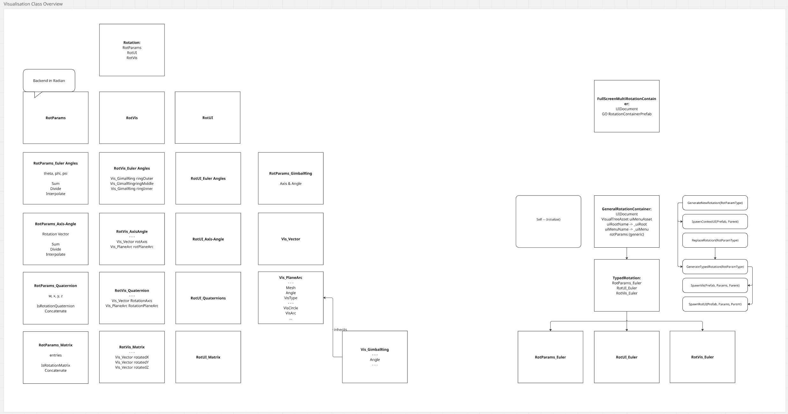

| Genre: | |
|---|---|
| Dev-Context: | |
| Time - Team-Size | - |
| my role: |
| Genre: | |
|---|---|
| Dev-Context: | |
| Time - Team-Size | - |
| my role: |
My Task: Write the code for rotation parametrizations.
Problem: Using the unity-built-in classes isn't enough, because they are hardly configurable (e.g. no custom editor) & some rotation parametrizations don't have inbuilt classes (e.g. no axis-angle class & matrices only as 4x4 matrices).
My Solution: For the sake of consistency and more control, I decided to write my own rotation math library. Thus, I had to research the mathematical functions, implement them and create a code architecture.
The example below shows my workflow exemplified based on my research and implementation of the quaternion exponential map.

For a full overview I read not only game dev sources, but also math sources.
image-legend: θ is the angle of a rotation, v is the axis of rotation. The exponential map forms a quaternion from a rotation vector: the first three quaternion entries are the rotation-axis scaled by cos(θ/2), and the fourth is sin(θ/2).
full-source: Grassia 1998, Practical Parametrization of Rotation
https://www.cs.cmu.edu/~spiff/moedit99/expmap.pdf

Based on the gathered knowledge I created an overview of the needed classes & their connections.
public class RotParams_Quaternion : RotParams_Base
{
...(other code)...
public RotParams_Quaternion(Vector3 inAxis, float inAngle, bool enforceLength = true, float targetLength = 1)
{
inAxis = inAxis.normalized;
float halfAngle = inAngle * 0.5f;
float cos = (float)Math.Cos(halfAngle);
float sin = (float)Math.Sin(halfAngle);
lockableWXYZ.SetVector(new List<float> ()
{
cos,
inAxis.x * sin,
inAxis.y * sin,
inAxis.z * sin
});
lockableWXYZ.EnforceLength = enforceLength;
lockableWXYZ.TargetLength = targetLength;
}
...(other code)...
}
The "RotParams_Quaternion"-script contains the backend code for quaternions. It is responsible for the mathematical calculations and normalization of the quaternion.
The full class is available here
public class RotParams_Quaternion : RotParams_Base
{
...(other code)...
public RotParams_Quaternion(Vector3 inAxis, float inAngle, bool enforceLength = true, float targetLength = 1)
{
inAxis = inAxis.normalized;
float halfAngle = inAngle * 0.5f;
float cos = (float)Math.Cos(halfAngle);
float sin = (float)Math.Sin(halfAngle);
lockableWXYZ.SetVector(new List<float> ()
{
cos,
inAxis.x * sin,
inAxis.y * sin,
inAxis.z * sin
});
lockableWXYZ.EnforceLength = enforceLength;
lockableWXYZ.TargetLength = targetLength;
}
...(other code)...
}
RotVis_Quaternion is the frontend script responsible. It stores a reference to a RotParams_Quaternion object and subscribes to its "OnValueChanged"-event. When the event is fired it reacts with the "UpdateVis"-function that forwards the changes to the individual math-visualization objects.

(in combination with the other worksteps): The plane is rotated by the two unit quaternions, which share a rotation axis (yellow), but differ in their angle.
My Task: Visualize multiple different parametrizations of rotations.
My Approach: Step 1 & 2: Start from sketches how to visualize; Step 3–5: Model individual math-visualization objects such as a torus, vector-head & -body, ... and import them to Unity. Step 5: Write scripts and shaders for the objects. Step 6–7: Compose the scene hierarchy in Unity.
The example below focuses mostly on Euler angles visualized as gimbal.

For Euler angles I found a youtube-video
explaining gimbal-lock, which served as my
reference & inspiration.
Original Source:
https://www.youtube.com/watch?v=zc8b2Jo7mno

I start projects by sketching visuals and noting to-dos.
Above: Plans for three visualizations (quaternions and axis-angle share one). Runtime gizmos for in-scene parameter manipulation - the dark-blue-curved arrows in the axis-angle and matrix visualization - were initially planned but deprioritized.

Though I have worked with proprietary modeling software (maya) before, I decided that for this project I learn blender to have a comparison to a freeware modeling program.

I had to transfer the meshes from blender to Unity.
Problem: Blenders & Unity's coordinate systems are different.
My Solution Since the blender default exporter rotates objects compromising an .fbx (see left), but I needed the actual meshes to be rotated correctly - for mathematical coding reasons - I wrote my own blender to unity exporter (see right).

Since I like seeing visual networks, I used shader-graph for the angle-shaders. However, to keep it more orderly, I wrote the more complicated math functions as custom-hlsl-functions. E.g., IsValueInModRange calculates whether an angle is between two other angles respecting the modular nature of angles.

A rotation-shader during bug-testing. One idea was to display positive and negative angles colors differently, but that didn't work out with the industry standard axis- & angle-color scheme (red for x, green for y, blue for z).

In the unity scene hierarchy the gimbal rings are nested. The parent-object RotVis_EulerGimbal has the script "RotVis_EulerAngle" that references the individual elements (top of inspector), the settings (middle of inspector) and accesses the underlying Parametrization (bottom of the inspector)
For reusability & bug-testing the shaders values must be manipulatable for each gimbal-ring individually. However, once the full gimbal is assembled, it should be the central hub for setting up the colors and rotation values so that I don't have to continuously switch between the game objects for adjustments.

In combination with the UI, the user can adjust the Euler angles freely.
My Task: Create a UI that enables the user to manipulate rotation parameters.
My Approach: 1 & 2: Start from sketches how to visualize; Step 3–5: Model individual math-visualization objects such as a torus, vector-head & -body, ... and import them to Unity. Step 5: Write scripts and shaders for the objects. Step 6–7: Compose the scene hierarchy in Unity.
The example below focuses on the implementation of the UI for the axis-angle-rotation-parameters; specifically the x-value.

To start with the UI, I made a rough sketch of how I want the UI to look, as well as a brief to-do-list.

For this project I decided to learn unity's new UI Toolkit.
Styling the UI led to confusion about where certain styles originated; I solved this with a more organized file- and selector-structure.

To connect the UI values to the backend math values, I used UI-Toolkits binding feature.
The image above shows how the UI's x-Axis float-field is bound to the property AxisX of RotParams_AxisAngle.
(Left -> the additional Property; Right -> the UI-Document-Editor; Right-bottom -> the Binding-Window)
The AxisX-property ensures that when the user changes the x-value, the y- and z-values change accordingly, such that the rotation axis remains normalized.
The user can freely adjust the values by typing in values or dragging it up & down.